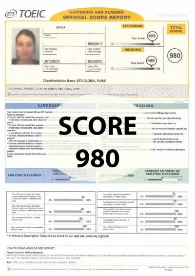
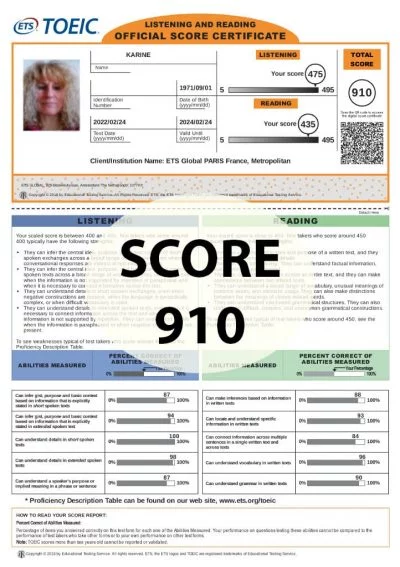
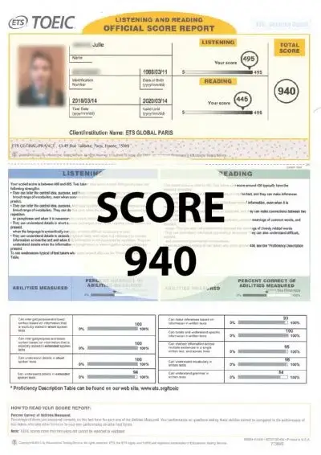
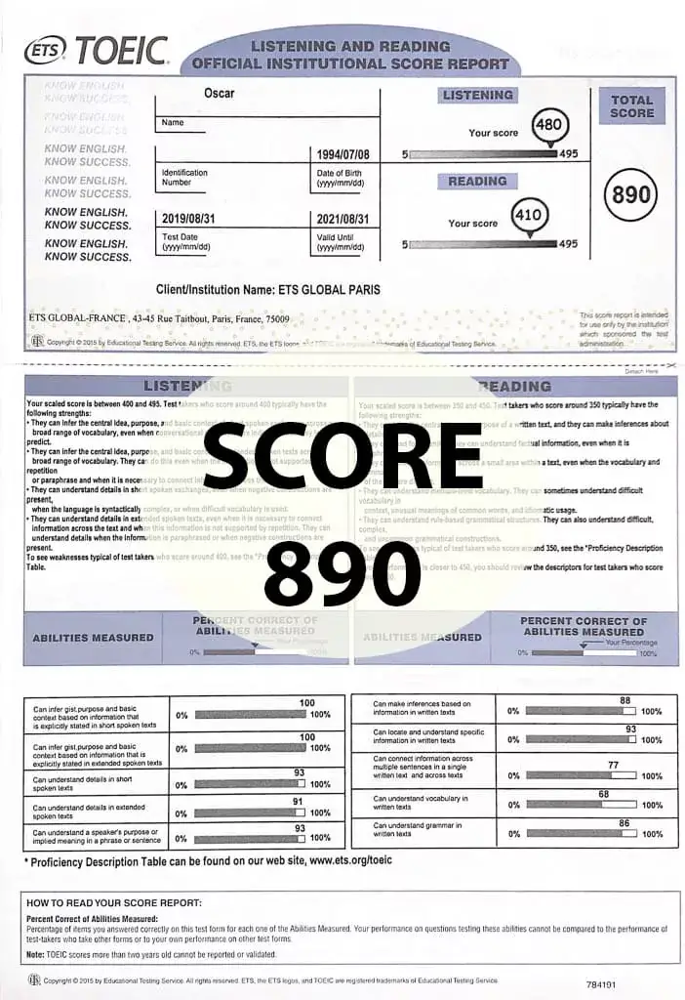
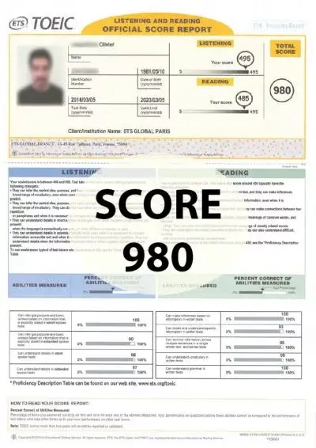
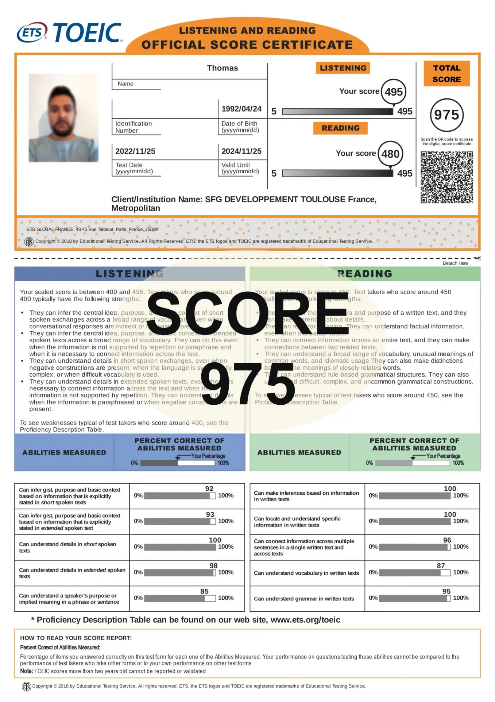
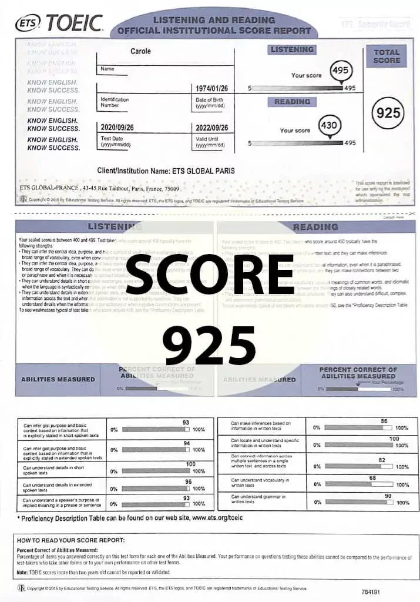
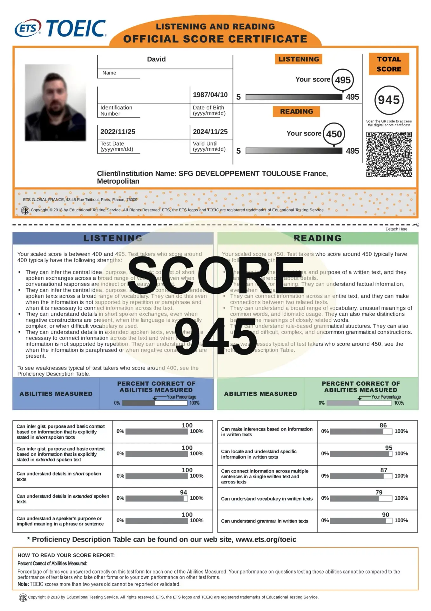
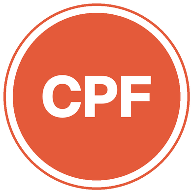

Des cours de TOEIC pensés pour un objectif chiffré : un professeur dédié au 1 place de la République (Paris 3e) ou à distance, des TOEIC blancs corrigés et un suivi jusqu'au jour du test.
1 place de la République, 75003 Paris, ou en visio
Où passer le test
Sessions chaque semaine au centre ETS de Paris 9e
Le test
200 questions, environ 2 h, score sur 990
Disponibilités
Cours 7 jours sur 7, de 8 h à 21 h
Nos formules de préparation à Paris
Cours individuels, stages ou groupes en visio : le test de positionnement permet de choisir la formule la plus adaptée.
République ou en visio
Cours particuliers TOEIC
Des cours 100 % individuels au 1 place de la République (Paris 3e) ou en visio, aux horaires qui vous arrangent, avec un programme revu au fil des séances.
Relevés de score officiels ETS obtenus après une préparation TOEIC First.

980sur 990

910sur 990

940sur 990

890sur 990

980sur 990

975sur 990

925sur 990

945sur 990
Le TOEIC à Paris : pour qui, pour quoi
Étudiants, jeunes diplômés et salariés passent le TOEIC pour une raison précise. Votre préparation au TOEIC à Paris part de cette échéance.
Étudiants en école
Seuil fixé par l'école
Le score minimum conditionne souvent la remise du diplôme : on planifie la préparation pour ne pas la repousser au dernier semestre.
Candidats en admission parallèle
Score récent exigé
Une bonne note au TOEIC renforce un dossier d'admission en master ou en école.
Salariés
Projet professionnel
Mobilité, promotion, poste au contact de clients étrangers : le score sert de repère commun.
Demandeurs d'emploi
Un argument concret
Un score récent rassure un recruteur et valorise le CV.
Comment se passe la préparation
Faire le point
On commence par un test de positionnement, puis un échange pour fixer le score à atteindre et la date du test.
Combler les lacunes
Grammaire, vocabulaire du monde professionnel, compréhension orale : on cible ce qui fait perdre le plus de points.
Maîtriser le test
Chaque partie du TOEIC a ses techniques. On les travaille, puis on enchaîne les TOEIC blancs chronométrés avec correction détaillée.
Votre calendrier de préparation
3 mois avantBilan de niveau
On mesure l'écart avec le score demandé.
8 semaines avantRéservation
Choix d'une session publique et inscription en ligne.
1 mois avantTests blancs
Un TOEIC blanc par semaine, corrigé en cours.
La dernière semaineRévisions
Points faibles, gestion du temps, documents prêts.
Comprendre son score au TOEIC
Deux sections notées chacune de 5 à 495 points, pour un total de 10 à 990.
10225550785990
B2785 à 940 points
Seuil souvent exigé par les écoles d'ingénieur et de commerce
Score TOEIC
CECRL
Repère
945 à 990
C1
Anglais professionnel très solide
785 à 940
B2
Seuil souvent exigé par les écoles d'ingénieur et de commerce
550 à 780
B1
Autonome dans les situations courantes
225 à 545
A2
Bases à consolider
Seuils minimaux publiés par ETS. Pour le niveau B2, ETS retient aussi un minimum par section : 400 en Listening et 385 en Reading.

Le CPF pour financer vos cours de TOEIC
Nos formations peuvent être financées par le CPF lorsqu'elles préparent à la Certification TOEIC 4 compétences (RS7229), qui évalue l'écoute, l'expression orale, la lecture et l'écrit. Le reste éventuel dépend des droits disponibles sur votre compte.
Seule la certification 4 compétences est éligible : le TOEIC Listening and Reading passé seul ne relève pas du CPF.
Pour s'inscrire seul, il faut passer par une session publique organisée dans un centre agréé ETS Global : le test se fait sur ordinateur ou sur tablette. Le TOEIC à distance et la version adaptative ne sont ouverts qu'aux candidats inscrits par leur école ou leur employeur.
Centre
Où
Infos
ETS France (ETS Global)
24 rue Chauchat, Paris 9e
Le centre principal : plusieurs sessions par semaine, parfois le soir
Autres centres d'Île-de-France
Versailles, Créteil, La Courneuve, Évry, Orly…
Sessions publiques annoncées par ETS dans toute la région
Source : pages de sessions publiques d'ETS Global (etsglobal.org), relevées en octobre 2026. Les sessions changent souvent : vérifiez les dates au moment de vous inscrire.
Vidéo : passer le TOEIC à Paris, où s'inscrire et comment se préparer.
189 €
Tarif du test
Pour une session publique, tarif affiché par ETS Global à l'automne 2026. Les étudiants et demandeurs d'emploi bénéficient de 17 € de réduction sur justificatif.
En ligne
Inscription
Tout se fait sur etsglobal.org : vous choisissez une date, vous payez en ligne et la convocation arrive par e-mail. Pensez à votre pièce d'identité le jour J.
2 ans
Résultats
Le score s'affiche en général quelques heures après un test sur ordinateur, avec une attestation numérique. Il est valable deux ans.
TOEIC First Paris : l'accès
TOEIC First, France Prépa1 place de la République 75003 Paris
D'après les informations relevées en octobre 2026 : ETS France (ETS Global), et d'autres centres d'Île-de-France. Le centre ETS de la rue Chauchat propose des sessions plusieurs fois par semaine, ce qui laisse beaucoup de choix de dates.
Où ont lieu les cours TOEIC First à Paris ?
Dans nos locaux au 1 place de la République (Paris 3e), 75003 Paris, ou en visio. Métro République, lignes 3, 5, 8, 9 et 11, au pied de l'immeuble. Bus 20, 56, 65 et 75.
Comment se déroule le TOEIC Listening and Reading ?
Le test compte 200 questions à choix multiples. La partie Listening dure 45 minutes, la partie Reading 75 minutes, soit environ deux heures au total.
Quel score faut-il pour un niveau B2 ?
785 points au total est le repère le plus souvent utilisé pour le niveau B2. Vérifiez le seuil exact auprès de votre école ou de votre employeur.
Peut-on suivre les cours à distance ?
Oui, toutes nos formules existent en visio, avec le même professeur et les mêmes TOEIC blancs qu'en présentiel.
Mon score sera-t-il encore valable dans 3 ans ?
Non : un score TOEIC est valable deux ans. Passé ce délai, la plupart des organismes demandent de repasser le test.
Le CPF peut-il financer ma préparation ?
Oui. Le CPF peut financer une formation préparant à la Certification TOEIC 4 compétences (code RS7229). Le montant pris en charge dépend de vos droits.
Prêt à viser votre score ?
Un conseiller vous rappelle pour fixer votre objectif et construire votre préparation au TOEIC à Paris.